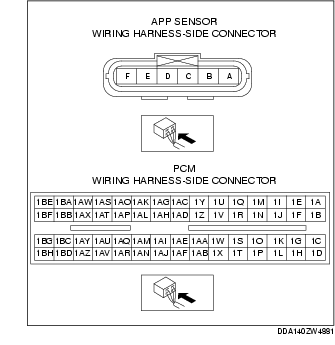

Accelerator pedal position (APP) sensor inspection [ZY]
Voltage Inspection
1. Turn the ignition switch to the ON position.
2. Verify that the APP sensor output voltage (WDS PID: APP1, APP2) is within the specification. (See PCM INSPECTION [ZY].)
- • If not within the specification, replace the accelerator pedal. (See ACCELERATOR PEDAL REMOVAL/INSTALLATION [ZY].)
- • If the monitor item condition/specification (reference) is not within the specification, even though there is no malfunction, perform the "Circuit Open/Short Inspection".
Circuit Open/Short Inspection
1. Remove the PCM connector cover.
2. Disconnect the PCM connector. (See INTAKE-AIR SYSTEM REMOVAL/INSTALLATION [ZY].)
3. Disconnect the APP sensor connector.
4. Inspect the following wiring harnesses for open or short circuit. (Continuity inspection)

Open circuit
- • If there is no continuity in the following wiring harnesses, there is an open circuit. Repair or replace the wiring harness.
- - APP sensor terminal A and PCM terminal 1F
- - APP sensor terminal B and PCM terminal 1C
- - APP sensor terminal C and PCM terminal 1AD
- - APP sensor terminal D and PCM terminal 1E
- - APP sensor terminal E and PCM terminal 1B
- - APP sensor terminal F and PCM terminal 1Z
Short circuit
- • If there is continuity in the following wiring harnesses, there is a short circuit. Repair or replace the wiring harness.
- - APP sensor terminal D and body ground
- - APP sensor terminal D and power supply
- - APP sensor terminal A and body ground
- - APP sensor terminal A and power supply
- - APP sensor terminal F and body ground
- - APP sensor terminal F and power supply
- - APP sensor terminal C and body ground
- - APP sensor terminal C and power supply